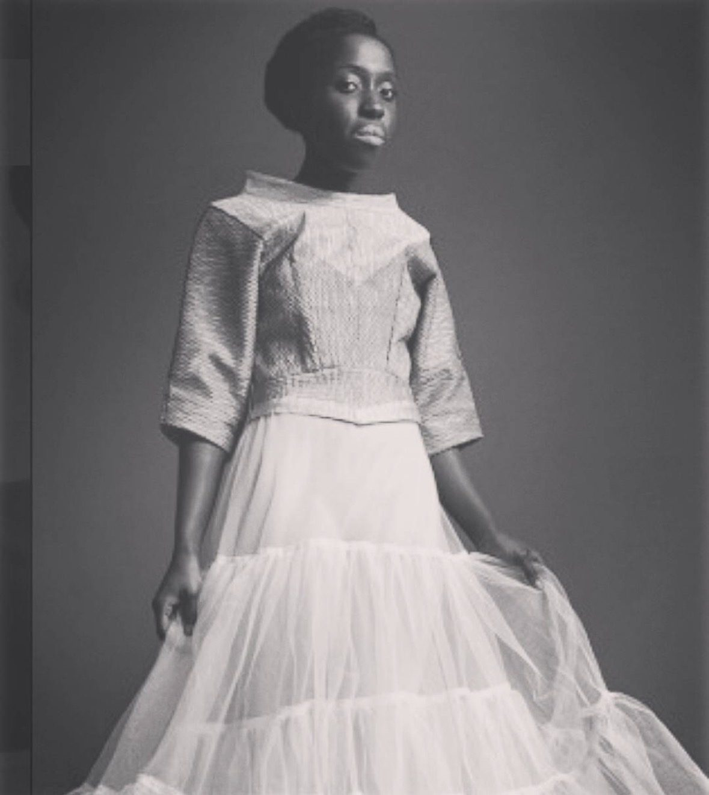

Biography
About
Mammi-Ama is an Ashanti (Akan) American singer-songwriter and multi-instrumentalist whose sound is eclectic and ever-changing. Her Ghanaian roots and the sound of highlife forever influence her music, above all her drumming, while piano and guitar shape a soulful style in the spirit of Joni Mitchell. Classically trained in piano from the age of six, she composed her first arrangement at seven, and today she also plays African and Indian drums, guitar, clarinet and cello.
Her sound is shaped by the music she grew up with and the paths she has followed since: her parents, Stevie Wonder and Phoebe Snow. Early recordings such as “Not The Last Time” and “Fly Away From Here” (2011), released under her earlier moniker The Purple Vintage Space Princess, showed the warm vocals and guitar-led writing that still run through her work today.
Since 1998, Mammi-Ama has performed her original compositions live at venues including The Village Underground, CBGB, Freight & Salvage, Rockwood Music Hall, Drom and Le Poisson Rouge. She performed her single “Wounds to Mend” on The Mike & Juliet Show (FOX, 2008), was interviewed live on WBAI 99.5 FM (2010) and appeared on Royal Pains (USA, 2011).
At the heart of her work is a mission: using music for multi-generational storytelling. She produces regular events with public libraries, religious centers and art galleries, and as Director of Music at The Common School in Amherst, Massachusetts, she brings drumming, piano and song to young musicians, including the school's “Big Sing”.
Her music is available on Spotify, Apple Music and other streaming platforms. In 2026, after well over a decade, she returns with Completely Renewed, songs about how she has been completely renewed through life’s ups and downs.

Press-approved photos: see Press / EPK.
Sound
Voice · Piano · African & Indian drums · Guitar · Clarinet · Cello
Roots
Ashanti (Akan) heritage · Ghanaian highlife · Her parents · Stevie Wonder · Phoebe Snow
Based in
Amherst, Massachusetts
Beyond the music
Other creative ventures
- 2003Garment Colors knitwear
Featured in Time (2003) and PAPER Magazine (2009) - 2010Style icon
Featured in Glamour - 2011Fashion design instructor
Amherst College - 2013PVSP Naturals body care
Featured in Essence - 2014Ama Cafe
Vegan & vegetarian cuisine - 2016Reiki practitioner
Practicing since 2016
